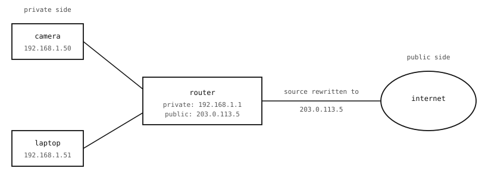

9.7. プライベートネットワークとNAT¶
IPv4は40億個のアドレスを持つように設計されており、当時はそれで十分だと思われていました。しかし実際には足りません。インターネットに接続されたすべての家庭、オフィス、工場は、内部デバイス用に独自のアドレスブロックを必要とし、世界中のカメラ、スマートフォン、家電を加えると、40億では到底まかなえません。
インターネットが採用した回避策が プライベートネットワーク です。ローカルネットワーク上のほとんどのデバイスは、グローバルには一意でなくそのネットワーク内でのみ有効なアドレスを使用し、その境界に位置する1台のデバイスが2つの世界の間を変換します。カメラはほぼ常に、こうしたプライベートネットワークのいずれかに属しています。
9.7.1. プライベートアドレス範囲¶
3つのIPv4範囲が 公開インターネット上でルーティングされない ものとして予約されています。これらの範囲内のアドレスは、ローカルネットワーク外のルーターが配送を試みることが決してないため、誰とも調整することなくどのローカルネットワークでも自由に使用できます。
10.0.0.0--10.255.255.255（1600万アドレス。大規模な企業ネットワークでよく使われます）。172.16.0.0--172.31.255.255（約100万アドレス。実際にはあまり使われません）。192.168.0.0--192.168.255.255（6万5千アドレス。ほぼすべての家庭用ルーターのデフォルトです）。
一般的な家庭用ネットワークでは、カメラとそれに接続するノートパソコンの両方が 192.168.x.x アドレスを使用します。これは家庭用ルーターがホストするネットワークに選ぶ範囲だからです。
9.7.1.1. ネットマスクの使われ方¶
IPアドレス ページでは /24 表記を紹介しました。ここで重要なのは、ネットマスクが各デバイスがパケットを次にどこへ送るかを判断するために使うものだという点です。カメラはパケットを送るたびに、自分のネットマスクを宛先アドレスに適用し、その結果を確認します。
宛先がカメラ自身のアドレスとネットワークビットを共有していれば、その宛先は 同じローカルネットワーク 上にあります。カメラはパケットを直接そこへ送ります。
宛先がネットワークビットを共有していなければ、それは別のネットワーク上にあるはずです。カメラはパケットを デフォルトゲートウェイ（リンクアップ時に自動的に設定されるルーター）に送り、残りの処理をゲートウェイに任せます。
この「ネットワークビットを共有しているか？」という単一の判定こそが、ネットマスクの目的です。これはまた、家庭用ネットワークがデフォルトで /24 を使う理由でもあります。254台のデバイス上限は家庭にちょうど収まり、ネットワークをシンプルに保ちます。
9.7.2. ネットワークアドレス変換（NAT）¶
192.168.1.50 上のカメラは、公開インターネット上のサーバーにそのままパケットを送ることはできません。公開インターネットは 192.168.x.x にはルーティングしないからです。家庭用ルーターはこれを ネットワークアドレス変換（NAT）で解決し、それを透過的に行います。

NATは送信パケットの送信元アドレスをルーターのパブリックアドレスに書き換え、受信した応答ではその書き換えを逆に戻すため、プライベートデバイスは1つのパブリックアドレスを共有しているように見えます。¶
ルーターは 2つの アドレスを持っています。ローカルネットワーク上のプライベートアドレス（一般的には 192.168.1.1）と、インターネットプロバイダーから割り当てられたパブリックアドレスです。カメラがパブリックアドレスにパケットを送ると、ルーターは次のことを行います。
カメラのプライベートアドレスとポートを記録し、それを自身の一時的な送信ポートと対応付けます。
パケットの送信元アドレスを自身のパブリックアドレスに書き換えます（送信元ポートも選んだ送信ポートに書き換えます）。
書き換えたパケットをパブリック側へ送出します。
応答がルーターのパブリックアドレスとポート宛てに返ってくると、ルーターは対応関係を調べ、宛先をカメラのプライベートアドレスとポートに書き戻し、ローカル側へ配送します。カメラは書き換えが行われたことを決して知りませんし、サーバーは元の送信元を決して知りません。
NATは家庭用ネットワークを実用的なものにしています。また、知っておく価値のある2つの帰結があります。
9.7.3. NATが変えること¶
送信は簡単です。 プライベートネットワーク上のカメラは自由に 外へ 通信できます。リモートサーバーへTCP接続を開いたりUDPパケットを送ったりするたびに、NATが自動的に対応関係を設定します。ほとんどのカメラアプリケーションはこの方向で動作します。画像をキャプチャし、それをどこかのサーバーへ送り、応答を受け取る、というものです。
受信は難しいです。 公開インターネット上のデバイスは、プライベートネットワーク上のカメラに直接接続 できません。要求していないパケットがルーターのパブリックアドレスに到着しても、ルーターが調べるべき対応関係が存在しないため、そのパケットには行き場がありません。ルーターはそれを破棄するか、ルーター自身で動いているサービスに渡します。
受信のケースに対する3つの回避策が一般的で、おおよそ実用性の高い順に並べると次のとおりです。
ポートフォワーディング。 選んだパブリックポートへの受信パケットすべてを特定のプライベートデバイスへ転送するようルーターを設定します。ルーターへの管理者アクセスが必要で、ルーターのパブリックアドレスが変わると壊れやすいです。
VPN。 仮想プライベートネットワークを運用し、カメラを、それに到達する必要のある相手と同じ論理ネットワーク上に置きます。重く、ほとんどのカメラ展開では対象外です。
送信主導の接続。 カメラが公開インターネット上のどこかにある既知のサーバーへ外向きに接続し、その接続を開いたままにします。サーバーは既存の接続を使ってメッセージをカメラへ送り返します。これがプッシュ通知やほとんどのクラウド接続デバイスプロトコルの動作方式であり、たいていのカメラアプリケーションが最終的に採用するパターンです。
NATはカメラ上のPythonコードからは見えません。スクリプトは必要な宛先と通信するだけで、ルーターが裏で変換を処理します。しかし接続の 方向 は重要であり、「カメラがクラウドサーバーへ手を伸ばす」が「クラウドサーバーがカメラへ手を伸ばす」よりもずっと容易な形である理由がNATなのです。